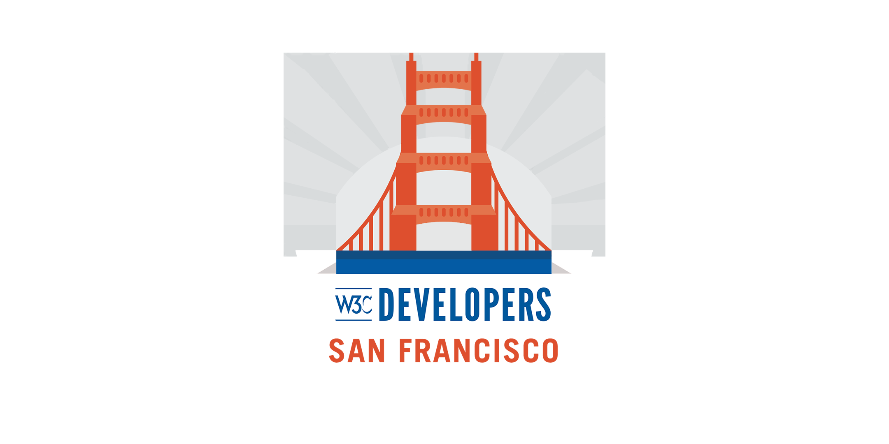

Continuing the explorations of Web & speech - if you missed the first part, catch up at https://youtu.be/gJ0gYki6F9k https://twitter.com/briankardell/status/909555942005575680
https://twitter.com/w3cdevs/status/909684805499006979Meet the future of the Web and the @w3c community building it on Nov 6 in #SanFrancisco! Register to our free event https://www.w3.org/2017/11/Meetup/
https://twitter.com/w3cdevs/status/913759299549192192